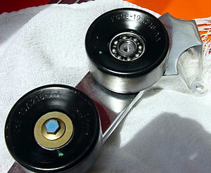

|
Idler Pulley Lubrication |
|
 From TZrider: While swapping over to my new polished pulley support I noticed the Idle pulleys didn't spin very freely. To correct this I popped off the bearing dust seals with a small pick and washed the bearings out with "break-away" (WD-40 etc. works well too). From there I repacked them with high pressure-temp grease and re-installed the dust caps. When I first took them off they would rotate 2-3 times, now with the same amount of force they'll spin 12-15 times. Once I started the truck the noise from the front of the motor was noticeably quieter, strange thing is it didn't seem noisy to start with.
step 1: remove blower belt
|